# Reading the Landscape of Davao City Chinatown
As part of its tourism and heritage initiatives, the Davao City government, in cooperation with Davao City Chinatown Development Council (DCCDC), has progressively developed and promoted the district since its designation in 2023.
This section examines the visual elements introduced through the Davao City Chinatown Development Council's initiatives. The discussion is based primarily on my personal observations while walking through the area and an interview with members of the council.
## Archways
Davao City's Chinatown has four archways serving as its entry points: the Unity Archway 「融合門」, the Peace Archway 「和平門」 , the Friendship Archway 「友誼門」, and the Prosperity Archway 「繁榮門 . These structures mark the boundaries of the district while also serving as prominent visual symbols of Chinatown.
### Unity Archway 「融合門」and the Unity Park 「融合園」
Completed on January 31, 2009, this was the second of four archways planned in Chinatown. The archway is characterized by its red, blue, green, and gold color scheme. Text visible on the arch are the Chinese characters for unity 「融合」 and 'Chinatown', written in a stylized font. The multi-tiered roof features several Chinese motifs: the carp, the dragon, and the burning pearl. The colorful plant-like pattern that runs across the middle of the arch bear visual similarities to decorative patterns found in Mindanao. Whether intentional or not, the representation of both cultures lives up to the ideals of unity the archway symbolize.
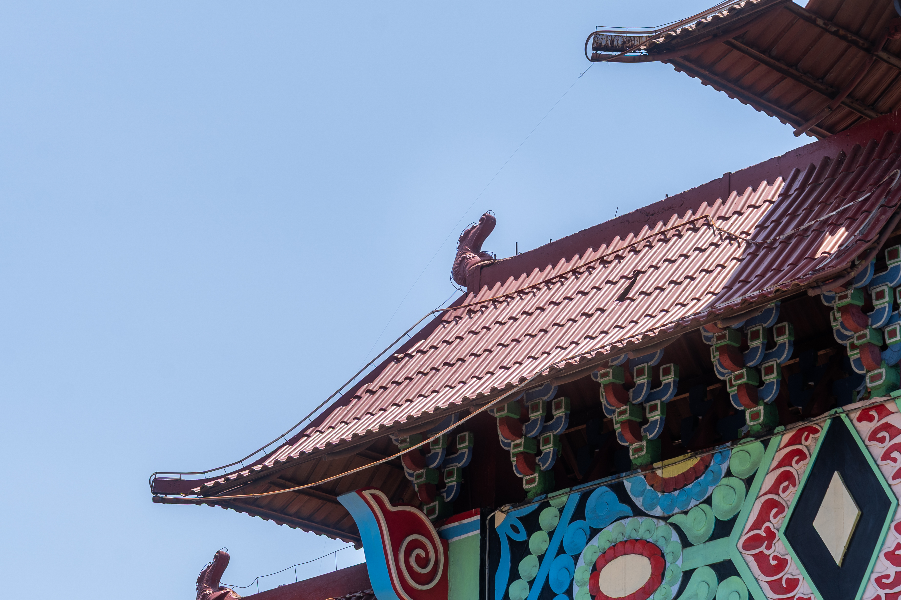
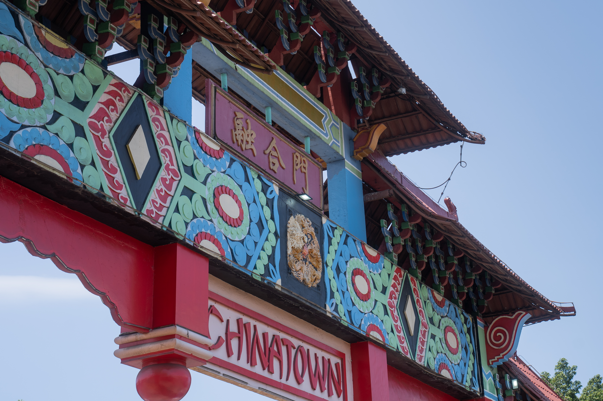
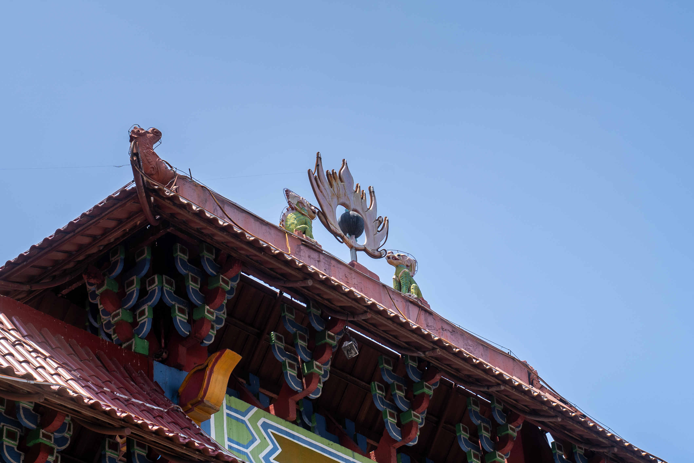
The Unity Arch was recently repainted in February 2026 in preparation for the Chinese New Year celebration
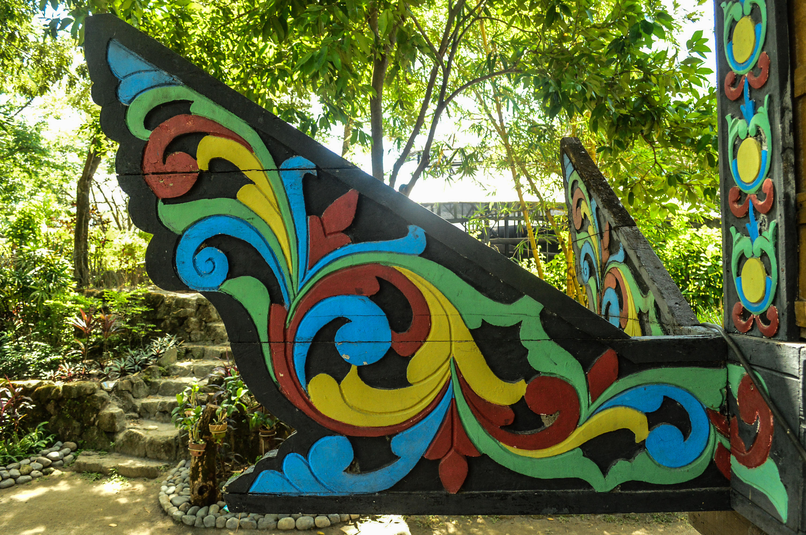
Nikka Cunom, CC BY 2.0 , via Wikimedia Commons
*Panalong, the extended house beam of a torogan, found on houses of sultans of the Maranao*
The construction of the archway was made possible with the donations of members of the Filipino-Chinese community, the Dabaw Kaisa Foundation, Inc., the Davao Filipino Chinese Chamber of Commerce, Inc., Davao Lioc Kui Fraternity, Inc., the Davao Filipino-Chinese Young Entrepreneur's Club, the Davao Filipino-Chinese Amity Club Davao Chapter, the Philippine Lam An Association Mindanao Chapter, and the Philippine Trust Bank.
Right next to the archway is the Unity Park, which was completed in 2020. The park was a later addition, proposed by then-mayor Sara Duterte, who envisioned a wishing tree as its centerpiece.
Familiar design motifs are present at the park: dragons chasing durians (rather than flaming pealrs), what appears to be stone lanterns, and geometric patterns found on the guardrails and lamp posts.
### Peace Archway 「和平門」
Also completed in 2009, this archway is predominantly red in color, with the Chinese characters for peace archway「和平」and its English translation in the middle. Like the other archways, similar Chinese motifs are present: the carp, the dragons, and the pearl. The main design pattern features distinctly-Davao symbols: the *Waling-waling*, a type of orchid endemic to the Philippines, the Philippine Eagle, for which the Mount Apo region serves as one of its ancient breeding grounds, the durian, the fruit Davao is known for, and what appears to be a motif reminiscent of the Mindanawon *okkir* pattern. The hexagonal design in the middle is the logo of the Yuchengco Group of Companies, the primary sponsor for this archway.
Moving to the inscriptions on the pillars of the archway, we can find some information on the monuments or the archways constructed on the borders of Chinatown. Another interesting find is a variation of the Chinese translation for Davao's Chinatown: 「華埠」.
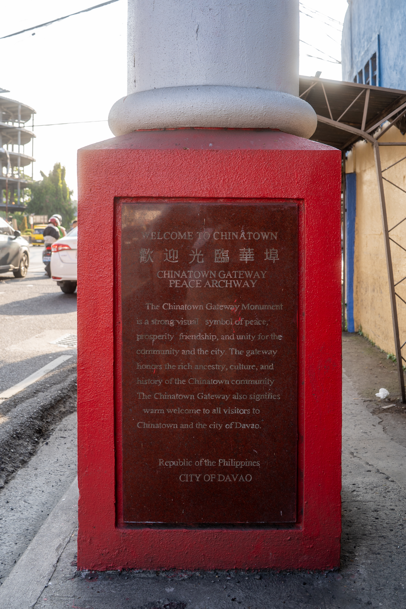
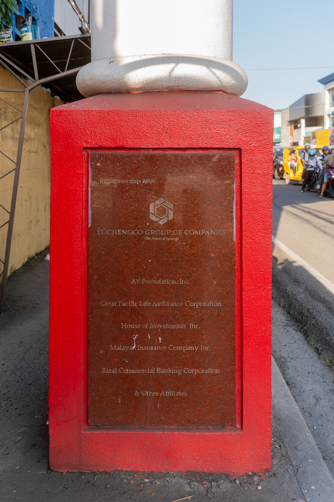
### Friendship Archway「友誼門」
The first archway to be completed in Chinatown, the Friendship Arch was inaugurated in August 2008. The design takes inspiration from the Yuan Garden in Shanghai, China. Like the Peace Archway, it is predominantly red in color with some green accents. The only text present on this structure are the Chinese characters for the Friendship Archway 「友誼門」. Unlike other archways, only the carp motif can be observed on this structure. The green railings around the text feature geometric, angular motifs along the upper railing and a more fluid motif along the lower railing.
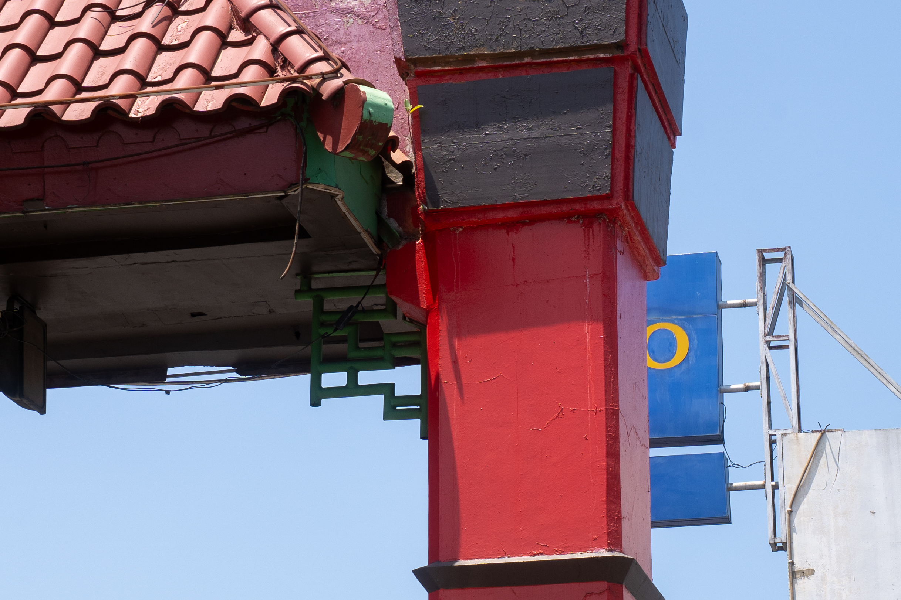
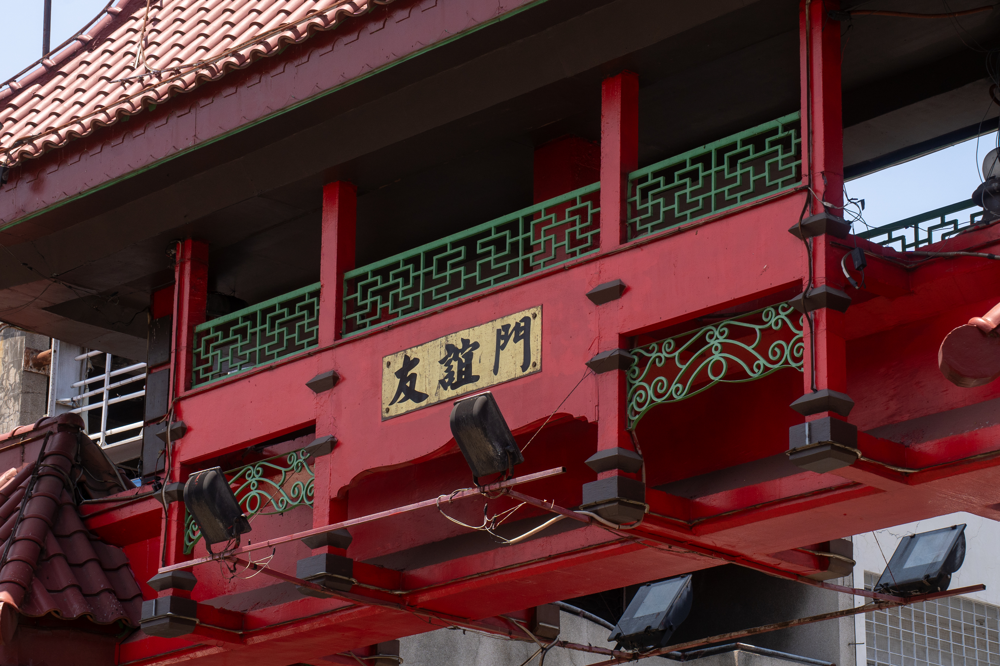
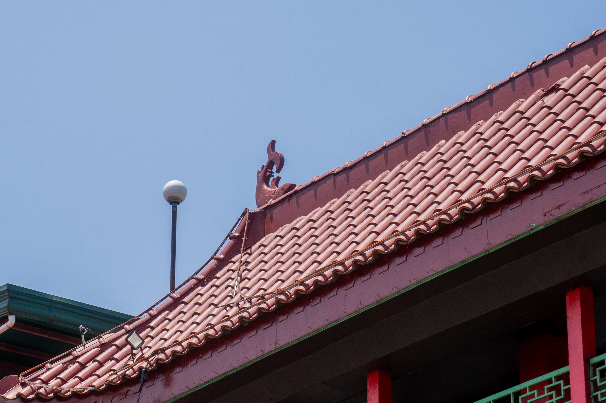
This structure was donated by the descendants of Francisco Villa Abrille (Lim Chuan Juna), one of the Chinese pioneers in Davao.
### Prosperity Archway 「繁榮門」
Completed in 2009, the archway's primarily blue color scheme sets it apart from the other structures. In terms of size, this also appears to be the smallest, with only one main section, compared to the other archways that have two or three. The familiar motifs found on the other arches such as the dragon and the pearl, are absent here save for the carps. The text on the arch, however, is quite interesting. Among all four archways, only this one is written vertically, with the Chinese characters 「繁榮門」and its English translation written below. The main geometric pattern seems to be inspired by the Wan 卐 Pattern, which is a common design pattern found in Chinese art and architecture.
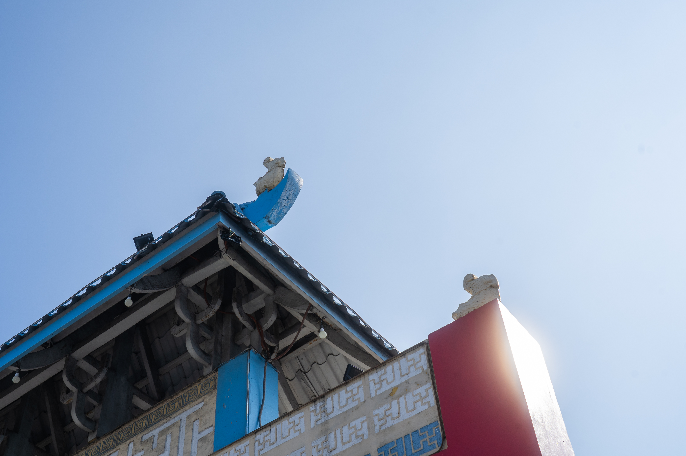
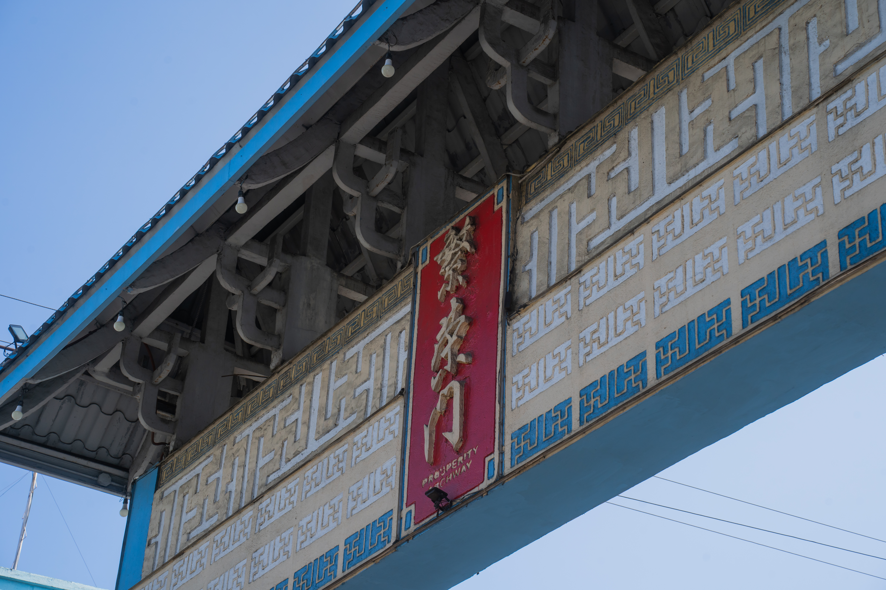
The construction of this archway was made possible with the donations of the PhilTrust Bank, the Phil. Lam An Association Mindanao Chapter, the Davao Lioc Kui Fraternity, Inc., the Davao Lioc Kui Fraternity Womens Club, and members of the Davao Filipino-Chinese community.
## **Street Signs**
Bilingual Chinese and English street signs stand out as another visible marker of Chinatown's identity. Beyond their practical function, these signs reflect a unique cultural synthesis. They feature lantern-inspired frames and playful motifs of dragons chasing durians, Davao's signature fruit, in place of the traditional fiery pearl.
Walking around Chinatown, I've noticed a few different versions of the 44 street signs identified in the area. Along Sta. Ana Ave. are some of the older designs, which lack the lanterns found on newer designs. Attached on top of these signs are cutouts of dragons painted red. These signs are bilingual, with the local names on top, and the Chinese translation below. According to the Council, these were done by the local government unit.
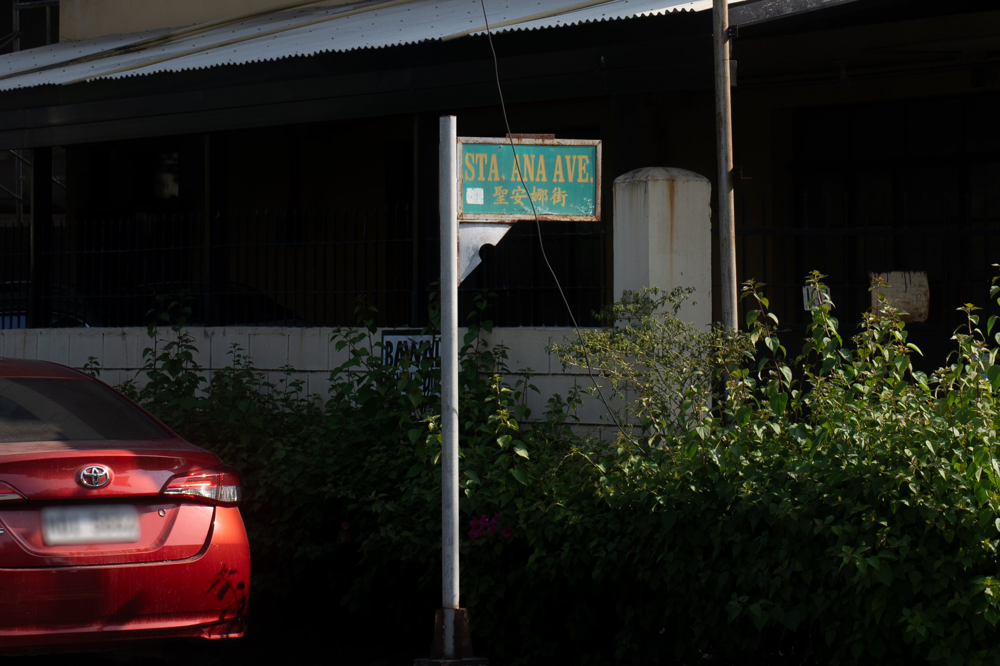
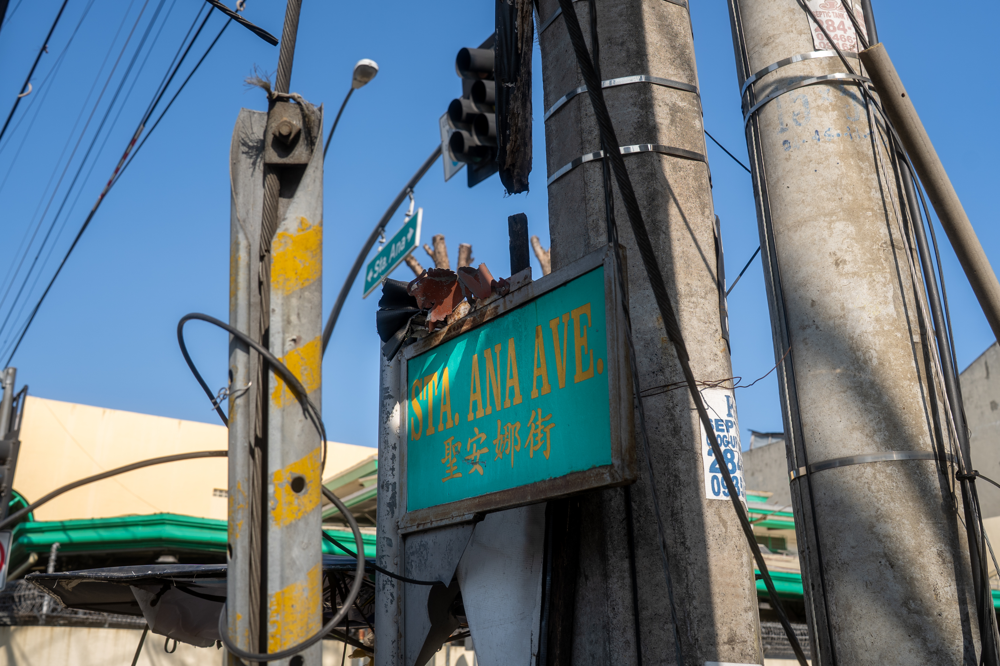
Older LGU-issued street signs along Sta. Ana Ave., featuring bilingual text and a red dragon cut-out
Unlike earlier designs, the newer variation incorporates a three-dimensional lantern mounted atop, which also serves as a branding space for corporate sponsors. The dragon fixtures have also been updated to three-dimensional figures chasing after durians. These newer street signs are mostly found along T. Monteverde Ave., and R. Magsaysay Ave. (formerly Uyanguren St.). As of August 2026, there are two (2) with empty lanterns, nineteen (19) with BDO (Banco de Oro), seventeen (17) with Metrobank, and interestingly, one (1) with the Davao City Chinatown Development Council (DCCDC).
An interesting pattern is the concentration of Metrobank-sponsored street signs along T. Monteverde Ave., and the concentration of BDO-sponsored street signs along R. Magsaysay Ave. According to the Council, the first set of street signs were courtesy of BDO, sponsoring 20 signs. Metrobank soon followed with their own set of signs along T. Monteverde Ave.
Aside from the design element, the text on these street signs is equally interesting. While the Chinese characters on the current signs were translated by former member Nancy King Ong of Davao Chong Hua High School, it is unclear as to who was responsible for the characters on the older, LGU-sponsored signs. As a result, some street names can have multiple varying translations. Take for example Sta. Ana Street, which has three different translations: 聖安街 , 三達安娜 , and the bonus 仙沓安娜 (as written in Farmacia Suy Hoo's shop signage).
While the majority of street signs in the area have been updated to the predominant design, there are also some signs without the decorative motifs. It is possible that these stylized signs are concentrated along the three main streets of Chinatown.
## **Shop Signs**
Shop signs provide a more everyday expression of Chinatown's identity. While there is no official city ordinance requiring bilingual display, several storefronts have adopted Chinese characters and decorative elements, acting on encouragement from the Chinatown Development Council. On bilingual signages, the variations often include: the use of either traditional or simplified characters, the use of either the *Hokkien* translation 「納卯」 or the Mandarin translation 「達沃」 for 'Davao', and differing approaches to translating or transliterating business names.
(Luna Gadget Shop) (Pawnshop) (Shaxian)
Representatives from the Chinatown Development Council acknowledged the difficulties in establishing a standardized naming and translation convention across the district. A combination of factors including generational differences, varyling linguistic backgrounds among business owners, and the challenge of balancing historic *Hokkien* transliterations with contemporary Mandarin standards, has made uniform adoption difficult. Ulitmately, these varied shop signs reflect a living process of cultural adaptation. The mix of languages and scripts highlights how the local community adapts
place makign here?